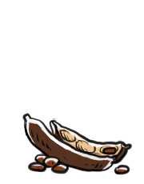

carob
The carob, or Ceratonia siliqua, is a tree in the legume family Fabaceae. It is cultivated for its edible pods, which when ripe, are sometimes dried, toasted and ground into carob powder. Carob pods are sweet, not bitter, and contain no theobromine or caffeine.
They are non-toxic to animals because they lack theobromine. Carob seeds is the base ingredients for the product of locus bean gum, a thickening agent used in the food industry.